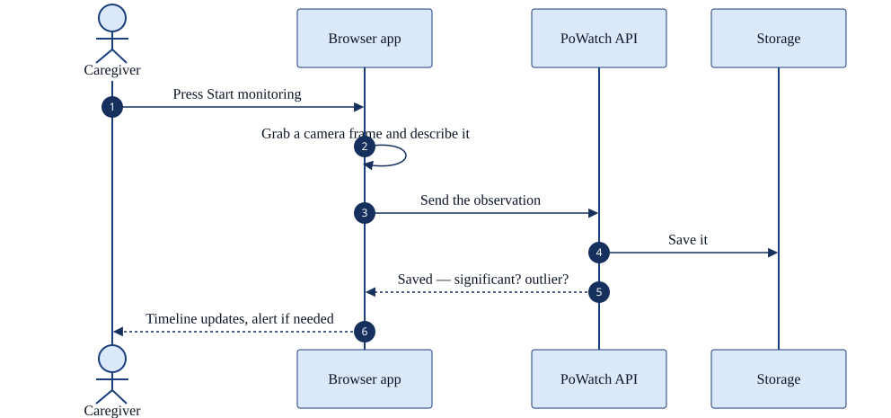
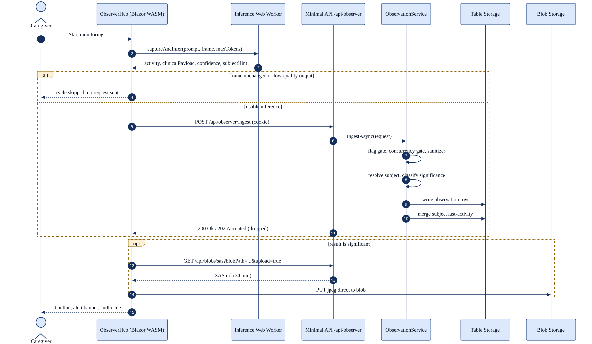
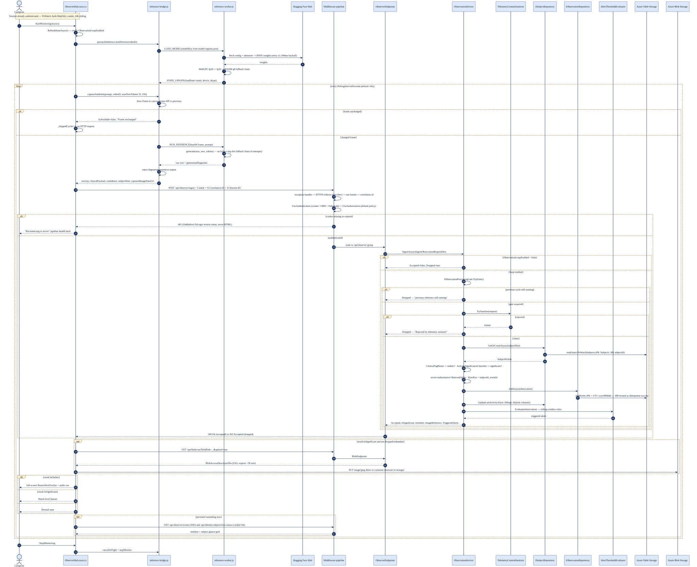

PoWatch · Generated documentation
One observation, traced end to end: the caregiver presses Start, the browser looks at a frame, the payload crosses the BFF boundary, the middleware pipeline runs, the orchestrator classifies it, the repositories write it to Table Storage, and an evidence frame goes straight to Blob Storage. Every failure mode along that path is documented with what the caregiver actually sees.
Press Start monitoring. Every ten seconds the browser takes one camera frame, writes a sentence about it, and sends that sentence to the server. The server decides whether it matters, saves it, and the screen updates. If something looks wrong, the screen takes over with a full-page alert. If anything breaks, the loop keeps running and tells you which part failed.

payload_lifecycle_verybasic.svgThe camera frame is described on the device. Only the resulting sentence is sent. A picture is uploaded only when the server says the moment was significant.
If the picture has not changed, no work is done and nothing is sent. That is why the loop is cheap enough to leave running all shift.
Lost connection, camera gone, model producing nothing usable, GPU running slow — each gets its own banner with its own wording, rather than one generic error.
The loop first re-reads /api/observer/state to confirm the operator kill-switch is not set, then starts the camera preview and loads the selected vision model into a Web Worker.
The frame is drawn to a canvas and compared with the previous one. An unchanged frame ends the cycle here: no model run, no network request.
A SmolVLM model generates one short sentence. Degenerate or empty output is rejected and the cycle is skipped with a reason the UI shows verbatim.
The client attaches no token — the session is an encrypted HttpOnly cookie the browser sends automatically. A per-load session id is threaded onto every call so the server can correlate a whole monitoring session.
An expired cookie is answered with a bare 401 rather than an HTML redirect, which is what lets the client show "Reconnecting" instead of rendering a login page inside the dashboard.
Four gates in order: the feature flag, a single-flight concurrency gate, the telemetry sanitizer, then subject resolution. Significance and outlier status are decided here — never by the caller.
The observation row is inserted into the UTC-date partition; the subject's last activity is merged. Both calls sit behind a Polly retry for transient storage faults.
Only when the server's verdict is significant. The API mints a 30-minute SAS and the browser uploads the JPEG directly — the image never passes through the API.
An outlier raises a full-screen takeover with the captured frame. A significant event raises a Watch banner. Redundant or dropped cycles skip the follow-up refreshes entirely.

payload_lifecycle_basic.svg| Failure | Where | What happens | What the caregiver sees |
|---|---|---|---|
| 401 — cookie expired | Authorization middleware | Status code, never an HTML redirect. The loop keeps running and retries on the next cycle. | "Reconnecting to server — last sync did not complete." |
| 429 — inbound throttling | Rate limiter | Unreachable today — the policy is registered but attached to nothing. | Nothing; no request is ever throttled. |
| 429 / 5xx — Azure Storage | Polly pipeline in both repositories | 3 attempts, 200 ms exponential backoff, each retry logged with the attempt number. | Usually nothing — the retry absorbs it. |
| 429 / 5xx — model weight fetch | Worker fetchWithRetry | 3 retries, 600 ms exponential backoff, GET/HEAD only. | Nothing, unless every attempt fails: "Model unavailable". |
| Camera unavailable | Bridge | Monitoring stops immediately. | A persistent error toast; the loop is cancelled rather than spinning. |
| Model produces nothing usable | Worker quality gate | Cycle skipped; the verbatim reply is kept for display. | The model's own status text — never "check your lighting". |
| Previous cycle still running | Processing gate | 202 Accepted with Dropped=true. | "Dropped by API". |
| Azure OpenAI unavailable | Handoff Coach | Falls through to the deterministic template. | A brief, marked as not AI-generated. |
| PDF engine missing | QuestPDF native binary | 503 with an explanation instead of a bare 500. | A message saying the PDF could not be generated on this server. |
PoWatch never shows one generic error. Each condition has its own wording, because a caregiver acting on the wrong diagnosis wastes a shift.
| Banner | Level | Raised when | Dismissible |
|---|---|---|---|
| ⚠ MOCK DATA chip | Persistent | The resolved inference service implements IMockable — i.e. UseMockAi is on | No — by design |
| Reconnecting to server | warn | An ingest or state call did not complete | Yes |
| Inference pipeline error | error | The loop threw something unrecoverable | Yes |
| GPU running fp32 fallback | warn | fp16 is unsupported on this adapter, so inference is slower | Yes |
| Timeline could not be loaded | warn | The archives read failed; it will retry on the next refresh | Yes |
| Threshold alert | alert | A rolling-window rule fired — 3 outliers in 10 min, or 10 events in 5 min | Acknowledge |
| Full-screen room alert | takeover | The server classified the observation as a clinical outlier | Yes, after acknowledgement |
/identity → PATCH /api/identity/subjects/{id}. Renaming a provisional Subject-N rewrites its historical identity references so past events read with the real name.
/archives → POST …/handoff-brief for the narrative, GET …/handoff-report for the PDF. The brief is grounded strictly in the shift window; drift context is attached only when the brief covers today.
/login reads /auth/config to decide which buttons exist, then either challenges Entra or, in dev and test only, signs in a guest. The cookie is set server-side; the client only ever asks /auth/me.

payload_lifecycle_complete.svg| Step | Code | Detail |
|---|---|---|
| Page init | ObserverHub.OnInitializedAsync | Five independent loads run concurrently — runtime state, timeline, JS diagnostics, subjects, model registry — so first paint lands after the slowest, not the sum. |
| Preference restore | UserPreferencesService | Poll interval restored from localStorage, clamped to 5–120 s, falling back to the configured default. |
| Kiosk keep-alive | RunSessionKeepAliveAsync | A low-frequency background ping keeps the 24-hour sliding cookie warm so an idle wall display never lapses to /login mid-shift. |
| Start pressed | StartMonitoringAsync | Re-verifies ObservationLoopEnabled; cancels any in-flight inference from a prior session so it cannot finish and overwrite the new run's state. |
| Preview | powatchInference.startPreview | Attaches the camera stream to the video element. Failure here stops monitoring outright rather than looping on a dead stream. |
| Model load | Worker LOAD_MODEL | Weights fetched from the Hugging Face Hub; the WebGPU → WASM fallback chain resolves the device and precision actually used. |
| Gate | Outcome when it trips | Cost avoided |
|---|---|---|
| Frame diff — has the image changed? | IsAvailable=false, status "Frame unchanged"; _skippedCycles++ | A full model run and a round trip |
| Generation — did the model return anything? | Up to 4 attempts stepping device and precision, then skip | Sending a meaningless observation |
| Quality — is the output degenerate or repetitive? | Discard; keep the verbatim reply in lastRejectedOutput | Polluting the clinical record |
The client matches on whether the worker classified the outcome, not on a status prefix. An earlier version keyed off the literal string "Low-quality", so a newly-added status fell through to the generic handler and reported "Sync blocked" — hiding the real reason. A separate earlier bug showed "Awaiting clearer frame" for what was actually a model-output rejection, blaming the camera for the model. A run skipping 100 % of its cycles looked like a lighting problem. Both are now reported verbatim.
| # | Layer | Behaviour on this request |
|---|---|---|
| 1 | CorrelationHandler (client) | Adds X-Correlation-ID and the per-app-load X-Session-ID. |
| 2 | Browser | Attaches the PoWatch.Auth cookie automatically — SameSite=Strict, same origin, so no CORS preflight exists. |
| 3 | /health rewrite | No match — passes through. |
| 4 | UseRouting | Selects the /api/observer/ingest endpoint and its metadata. |
| 5 | UseExceptionHandler | Armed; produces ProblemDetails with a traceId if anything downstream throws. |
| 6 | UseHttpsRedirection | Active outside Development only. |
| 7 | UseRateLimiter | Runs, selects no limiter — see the finding below. |
| 8 | CorrelationIdMiddleware | Echoes the correlation id on the response; pushes correlation, user and session onto the Serilog context; logs start and finish with elapsed ms. |
| 9 | UseAuthentication | Decrypts the cookie into a principal. A failure here yields no principal, not an exception. |
| 10 | UseAuthorization | Default policy: authenticated user required. On failure OnRedirectToLogin writes 401 — never an HTML redirect. |
| 11 | Log enrichment | Pushes UserId from the now-established principal and SessionId from TraceIdentifier. |
| 12 | Endpoint | ObserverEndpoints logs the received activity and subject hint, then calls the service. |
ObservationService.IngestAsync(request, ct) 1. logger.PollStart(observedAt, subjectHint, activity) 2. if (!ObservationLoopEnabled) → Dropped: "Observation loop is disabled by feature flag." 3. if (!processingGate.TryEnter()) → Dropped: "Frame dropped because previous inference is still running." 4. try { 5. if (EnableTelemetrySanitizer) 6. if (!sanitizer.TrySanitize(req)) → Dropped: "Rejected by telemetry sanitizer: {reason}" 7. subject = subjectRepository.GetOrCreateAsync(subjectHint) 8. isOutlier = !ClinicalTagParser.TryExtract(payload, out description) 9. verdict = ActivitySignificanceClassifier.Classify(activity, description) 10. // a caller-supplied reason is an explicit assertion and wins over the classifier 11. isSignificant = callerAssertedSignificance ? request.IsSignificant : verdict.IsSignificant 12. observedAtUtc = DateTimeOffset.UtcNow // server-authoritative — no backdating 13. Id = IdempotencyKey ?? new // stable identity for retries 14. ImageReference = isSignificant && SaveSignificantImages 15. ? "significant-images/{yyyyMMdd}/{subjectId}/{guid:N}.jpg" : null 16. isRedundant = IsRedundantObservation(subject, activity, isOutlier) // flagged, still persisted 17. observationRepository.AddAsync(observation) 18. subjectRepository.UpdateLastActivityAsync(...) // Merge, disjoint columns 19. triggeredAlerts = thresholdEvaluator.Evaluate(observation) 20. return Accepted + verdict + alerts 21. } finally { processingGate.Exit(); }
Time. The client's ObservedAtUtc is accepted on the wire and then ignored; the row is stamped server-side so an observation cannot be backdated.
Significance. The inference worker once set significance from caption length, which flagged every well-formed observation and made "Notable" meaningless. The classifier now decides from content. A caller that supplies its own reason still wins — an explicit reason is a deliberate assertion, which is what the dev-tool injectors and contract tests rely on.
Stable-state observations used to be discarded before persistence. Three things broke: drift detection missed stable subjects, archives never recorded them, and threshold rules never saw them. Redundancy is now a flag on the persisted row rather than a reason to discard it, so downstream consumers can filter while the record stays complete.
| Provider | Operation | Keying | Resilience | Conflict behaviour |
|---|---|---|---|---|
AzureObservationRepository | AddEntityAsync | PK = UTC yyyyMMdd; RK = {subjectId}_{eventId:N} | Polly: 3 attempts, 200 ms exponential, on 408/429/500/502/503/504 | 409 is success — an idempotent duplicate, logged and ignored |
AzureSubjectRepository | UpdateEntityAsync(Merge) | PK = "Subjects"; RK = {subjectId} | Same Polly pipeline | 404 ignored — the subject row is not yet created |
AzureBlobSasProvider | Mint upload SAS | significant-images/{date}/{subjectId}/{guid}.jpg | — | 30-minute expiry |
Browser (blob-upload.js) | PUT to the SAS URL | — | None — a failed upload is reported, not retried | Non-2xx throws with the response body attached |
InMemory*Repository | Both of the above | Same shape | n/a | Selected automatically when no storage connection is configured |
UpdateLastActivityAsync writes only LastActivity and LastActivityIsOutlier with TableUpdateMode.Merge. A concurrent rename or identity merge writing DisplayName and FirstSeenUtc touches disjoint columns and is therefore not clobbered by the per-cycle activity ping.
| Server verdict | Client reaction | Follow-up requests |
|---|---|---|
IsOutlier | Full-screen RoomAlertOverlay with the captured frame, subject, activity, local time; alert audio cue | Timeline + subjects refresh |
IsSignificant | Watch-level banner with the server's reason | SAS request + direct blob PUT, then timeline + subjects refresh |
Dropped | "Dropped by API" | None — nothing changed server-side |
SkippedAsRedundant | "Already synced · HH:mm:ss" | None |
| Normal | "Synced · HH:mm:ss" | Timeline + subjects refresh |
TriggeredAlerts non-empty | Accumulated into the threshold banner, deduplicated by rule and subject; a cue plays only on a newly raised alert | — |
| Null response (transport failure) | "API unavailable" + the Reconnecting health latch | — |
Acknowledging an alert does more than clear a badge: POST /api/observer/acknowledge explicitly evicts the HybridCache live-status entry. Without that eviction the badge survived until the ~10-second cache expiry, so the operator pressed the button, nothing appeared to happen, and they pressed it again.
| Direction | Field | Set by | Trusted? |
|---|---|---|---|
RequestIngestObservationRequestDto | SubjectHint | Worker | Sanitized, then used to resolve or create a subject |
Activity | Worker | Sanitized; feeds the significance classifier | |
ClinicalPayload | Worker | Sanitized; parse failure is the outlier signal | |
IsSignificant | Caller | Only when accompanied by an explicit reason | |
SignificantReason | Caller | Presence is what makes the caller's verdict authoritative | |
ObservedAtUtc | Caller | Ignored — the server stamps its own | |
IdempotencyKey | Caller | Becomes the event id, giving a retry a stable identity | |
ResponseIngestObservationResultDto | Accepted / Dropped | Whether the row was written | |
IsOutlier | Drives the full-screen takeover | ||
IsSignificant / SignificantReason | Echoed so the client stops second-guessing the verdict | ||
EventId | Canonical id of the persisted row | ||
SubjectId / SubjectDisplayName | Resolved identity, which may be newly minted | ||
ImageReference | The blob path to upload to — non-null only when evidence capture applies | ||
SkippedAsRedundant | Persisted, but represents no change | ||
TriggeredAlerts | Rolling-window rules that fired on this event | ||
Detail | Human-readable outcome shown in the sync status line | ||
| HTTP status | 200 when accepted, 202 when dropped — a drop is a valid outcome, not an error | ||
| # | Gate | Layer | Rejection | Visible to the caregiver? |
|---|---|---|---|---|
| 1 | Operator kill-switch (ObservationLoopEnabled) | Client pre-check | Monitoring refuses to start | Yes — "Monitoring Disabled" toast |
| 2 | Camera stream present | Bridge | Monitoring cancelled | Yes — persistent error toast |
| 3 | Frame changed | Bridge | Cycle skipped silently | Status line only — "No sync needed" |
| 4 | Model produced output | Worker | 4 fallback attempts, then skip | Yes — verbatim worker status |
| 5 | Output not degenerate | Worker | Discarded | Yes — the rejected reply is shown |
| 6 | Authenticated | Authorization middleware | 401 | Yes — "Reconnecting to server" |
| 7 | Rate limit | Rate limiter | Never trips | No |
| 8 | ObservationLoopEnabled, server side | Service | 202 + Dropped | Yes — "Dropped by API" |
| 9 | Single-flight processing gate | Service | 202 + Dropped | Yes |
| 10 | Telemetry sanitizer | Service | 202 + Dropped with the reason | Yes |
| 11 | Storage write | Repository | 3 retries, then the exception surfaces | Only if all retries fail |
| 12 | Evidence upload | Browser → blob | Reported, not retried | Yes — an upload toast, Azurite-aware in dev |
An unattended wall display runs for a whole shift, so cookie lifetime is the real risk. Three mechanisms address it: a 24-hour sliding expiry, a background keep-alive ping that slides the cookie while the display is idle, and a durable Data Protection keyring persisted to blob storage so an App Service recycle or scale-out event does not rotate the keys and invalidate every cookie at once. When a 401 does happen, OnRedirectToLogin writes the status code rather than redirecting — so the client shows "Reconnecting" and recovers on the next cycle, instead of rendering a login page inside the dashboard.
AddSlidingWindowLimiter("ApiPerIpPolicy", …) registers a named policy — 60 requests per minute, 6 segments, queue of 5, OnRejected writing 429 — and UseRateLimiter() is in the pipeline. But no endpoint calls .RequireRateLimiting("ApiPerIpPolicy") and no GlobalLimiter is set, so the middleware selects no limiter and every request is admitted. The OnRejected handler is unreachable and no client code handles 429 from PoWatch's own API. Outbound 429s — from Azure Storage and the Hugging Face Hub — are handled properly, by the two retry policies below.
| Path | Mechanism | Attempts | Backoff | Retries on | Safety |
|---|---|---|---|---|---|
| Observation table writes/reads | Polly ResiliencePipeline | 3 | 200 ms exponential | 408, 429, 500, 502, 503, 504 | Writes are idempotent by construction — the row key is derived from a stable id |
| Subject table operations | Polly, same shape | 3 | 200 ms exponential | 408, 429, 500, 502, 503, 504 | Merge writes touch disjoint columns |
| Model weight fetch | Worker fetchWithRetry | 3 retries (4 total) | 600 ms exponential | 429 and ≥500, plus network/TLS failures | GET/HEAD only — a mutating request can never be replayed; 4xx fails fast |
| Generation | Runtime fallback chain | 4 | none | Throw or empty output | Inputs are rebuilt after every backend switch — reusing WebGPU tensors on WASM produced bare ONNX errors with no message |
| Azure OpenAI call | AddStandardResilienceHandler | handler defaults | handler defaults | Transient HTTP | Circuit breaker + total and per-attempt timeouts; 45 s client timeout |
| Evidence upload | None | 1 | — | — | A failed upload is reported to the operator; the observation row is already written and keeps its ImageReference |
| SSE stream | Adaptive polling | continuous | 3 s base, up to 15 s after consecutive empty polls | — | Batch capped at 500 events for backpressure |
The evidence upload is the only mutating call with no retry. It is a direct browser-to-blob PUT, so a transient network blip loses the frame while the observation row survives with an ImageReference pointing at a blob that was never written. The POST /api/blobs/integrity endpoint exists precisely to detect that state after the fact.
| Surface | Trigger | Wording | Lifetime |
|---|---|---|---|
| MOCK DATA chip (topbar) | The resolved IInferenceService implements IMockable | ⚠ MOCK DATA, with the mock label in the tooltip | Permanent while mock mode is on — no dismiss control exists |
| Pipeline health latch — warn | Ingest returned null; state call failed; timeline load failed; GPU fell back to fp32 | Condition-specific, e.g. "GPU running fp32 fallback — fp16 unsupported on this adapter (slower)." | Latched until dismissed; cleared on the next successful start |
| Pipeline health latch — error | The inference pipeline threw | "Inference pipeline error — {message}" | Latched until dismissed |
| Sync status line | Every cycle | Synced · / Already synced · / No sync needed / Dropped by API / Sync blocked / API unavailable / Camera unavailable / Disabled by operator | Replaced each cycle |
| Threshold alert banner | A rolling-window rule fired | The rule's configured description, e.g. "3 or more clinical outliers detected in 10 minutes." | Until acknowledged; deduplicated per rule and subject |
| Room alert overlay | Server classified the event as a clinical outlier | Subject, activity, reason, local time, and the captured frame | Full-screen takeover plus an audio cue |
| Toasts | Camera loss, model registry load failure, evidence upload failure, observer API failure | Each carries its own cause; the Azurite case names the Docker emulator explicitly | 5–8 s, or persistent for camera loss |
| "All cycles rejected" state | ≥3 cycles run and none produced structured output | Surfaces the model-output problem instead of a healthy-looking idle loop | Until a cycle succeeds |
The chip is driven by whether the resolved service implements IMockable — MockInferenceService does, WebGpuInferenceService deliberately does not. That is the entire reason the otherwise-empty WebGpuInferenceService marker type still exists. A developer cannot ship mock output that looks real without also shipping the chip, because the same DI registration decides both.
POST /api/archives/{date}/handoff-brief { shiftWindow, audience, includeHighlights } → HandoffCoachEnabled? no → 503 → audience validated against { NurseToNurse, Supervisor, FamilySafe } FamilySafe && !AllowFamilySafeSummary → silently downgraded to NurseToNurse (logged) → ReportService.BuildHandoffReportAsync(date, shift) ShiftClock.WindowFor(localDate, shift) → half-open UTC window Morning 06:00–14:00 local Afternoon 14:00–22:00 local Night 22:00 → 06:00 local the FOLLOWING morning FullDay local midnight → local midnight reads 1–2 UTC partitions, then trims to exact instants → DriftRadarService, only when the brief covers today → IHandoffSummarizer.SummarizeAsync(context) Azure OpenAI when enabled and configured, else template; any failure → template → HandoffBriefDto { summary, priorityItems, followUps, sourceNotes, isAiGenerated }
The night shift crosses midnight. A brief for "the night of the 13th" must include the small hours of the 14th, because a night shift is one continuous stretch of work. Night is therefore defined as 22:00 → 30:00 on the local day.
Drift context is date-scoped. Drift Radar always scores today against a multi-day baseline; it takes no date. Attaching it to a brief for an earlier date presented current behaviour as if it belonged to that shift, so a brief pulled up for last Tuesday carried today's drift alerts. It is now attached only when the brief covers the day in progress, and the prompt states explicitly that drift is not scoped to the shift window.
| Action | Route | Effect |
|---|---|---|
| Pre-register a known person | POST /api/identity/subjects | Creates a Known profile without waiting for an observation |
| Name a provisional subject | PATCH /api/identity/subjects/{id} | Renames and rewrites historical identity references, so past events read with the real name |
| Merge two identities | POST /api/identity/merge | Rewrites the secondary's rows onto the primary; row keys change, so old rows are deleted after the new ones are written |
| Provisional reuse | automatic | A hint-less observation reuses a recent Subject-N within a 30-minute window, instead of minting a new "person" every cycle and filling the roster with un-nameable duplicates |
/login (Blazor route, anonymous) → GET /auth/config Production : Microsoft only (GuestEnabled forced false by !IsProduction) Development : Microsoft + Guest Test : Guest bypass / FakeAuth header → GET /auth/login/microsoft → Challenge(OIDC) code + PKCE, scopes openid profile email 404 when AzureAd:ClientId is unset — dev sign-in stays honest IssuerValidator checks AzureAd:AllowedTenants when supplied → OIDC signs into the cookie scheme; SaveTokens keeps tokens SERVER-side → returnUrl passed through SafeLocalUrl() only same-site absolute paths; rejects //host → client calls GET /auth/me and rebuilds its AuthenticationState